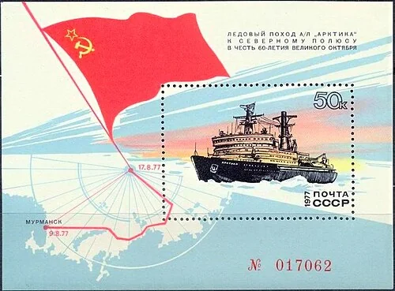
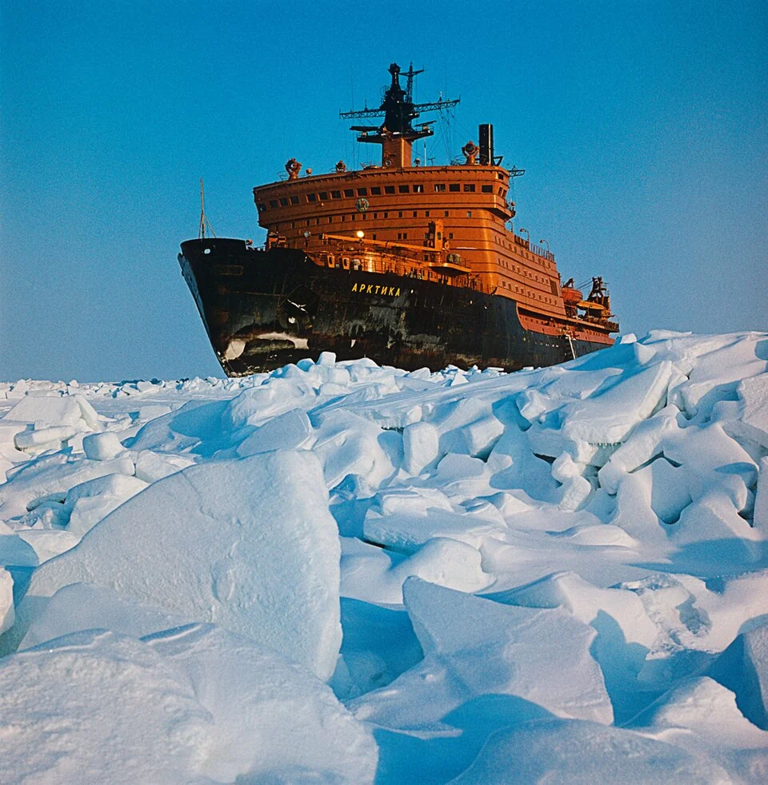
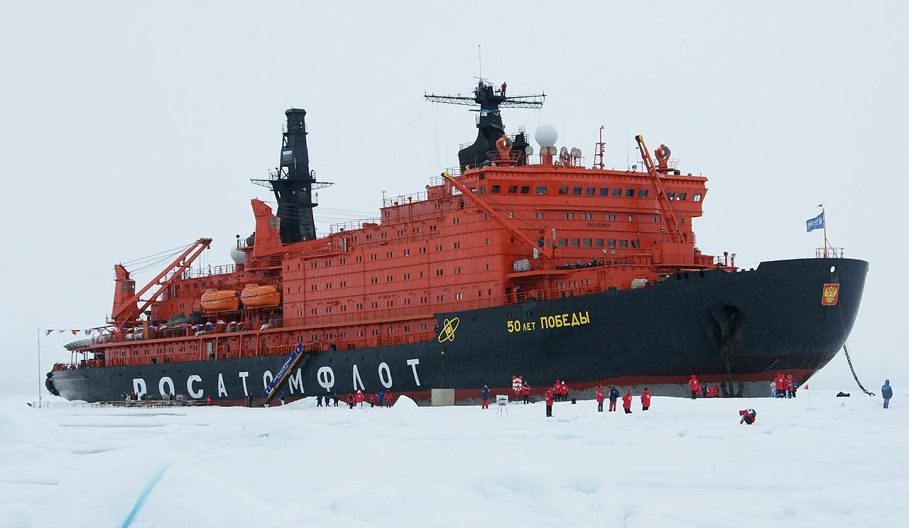
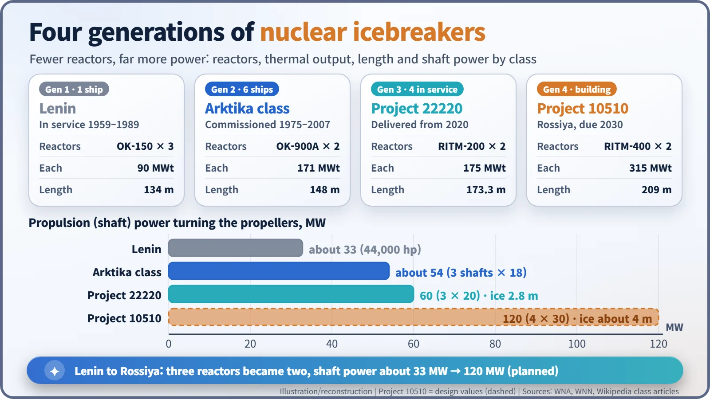
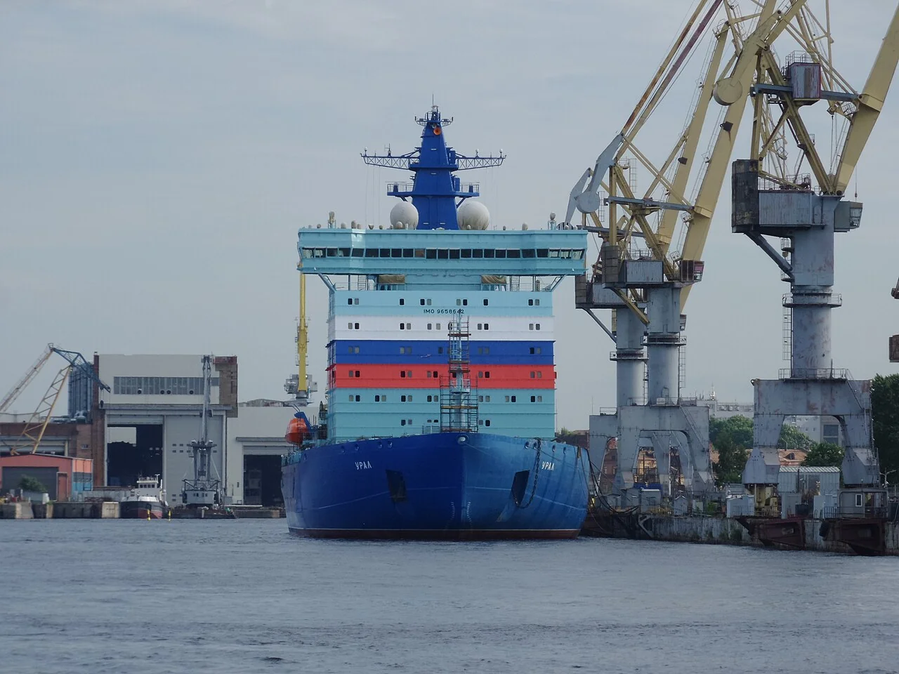
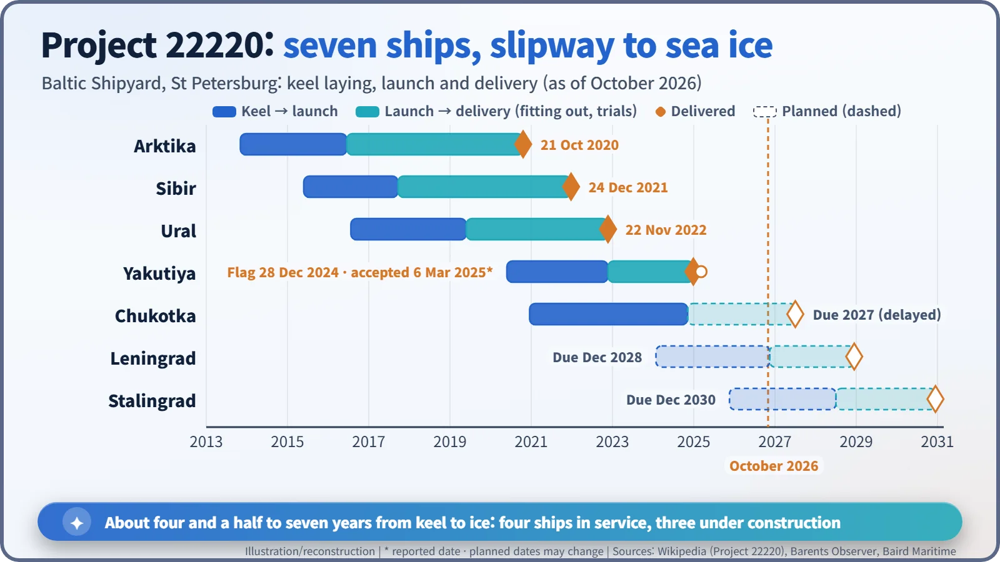

Nuclear History · 172
Commuting to the North Pole — Russia's Modern Nuclear Icebreaker Fleet, from Arktika to Project 22220
Outside navies, nuclear propulsion has worked most steadily in the ice-covered Russian Arctic, and a new generation of icebreakers is now taking over.
Outside the world's navies, the one place where nuclear propulsion has kept working steadily for decades is the ice-covered Russian Arctic. On 17 August 1977 the icebreaker Arktika became the first surface ship to reach the North Pole; today a new generation of Project 22220 icebreakers, each with two RITM-200 reactors, is taking over, and at the end of 2024 Russia had eight nuclear icebreakers in operation, the most since Soviet times.
Commuting to the North Pole
Mention nuclear-powered ships and most people picture submarines or aircraft carriers. Yet there is one place where civilian ships with reactors on board go to work every season: the Arctic seas off Russia's northern coast, where winter turns the water into thick, grinding ice. The ships are nuclear icebreakers, built to smash a channel for the cargo vessels behind them. At the end of 2024 Russia had eight of them in operation, the largest number since Soviet times. This is the story of how the path opened by the icebreaker Lenin, the world's first nuclear-powered surface ship in 1959, grew into a fleet. [3] [1]
No filling stations at the top of the world
An icebreaker works by driving its bow up onto the ice and crushing it under the ship's weight, again and again, for weeks or months. Along the Arctic coast there are very few ports where a ship can refuel. A reactor, by contrast, runs for years on one load of fuel. According to the World Nuclear Association, nuclear icebreakers stretched the navigation season on the Arctic route from about two months a year to ten, and to all year round in the western Arctic. [1]
4 a.m., 17 August 1977, latitude 90° North
On 25 April 1975 the Baltic Shipyard in Leningrad delivered Arktika. She carried two OK-900A pressurised water reactors of 171 MWt each, one reactor fewer than Lenin, yet her three propeller shafts delivered 18 MW apiece, far more power than her predecessor. [1] [6]
On 9 August 1977 Arktika left Murmansk on a voyage marking the 60th anniversary of the October Revolution. Under Captain Yuri Kuchiev she reached the geographic North Pole on 17 August 1977 at 4 a.m. Moscow time. The American submarine Nautilus had passed beneath the polar ice 19 years earlier, but no ship had ever reached the Pole on the surface by breaking through the ice. According to Atomflot, today's operator of the fleet, the trip took seven days and eight hours and covered 2,528 miles. [2] [5]

The Soviet post office marked the feat that September with a souvenir sheet that even shows the route and the dates, 9.8.77 at Murmansk and 17.8.77 at the Pole. A footnote of political history: from 1982 to 1986 the ship sailed under the name Leonid Brezhnev before getting her own name back. [6]

Six sisters and two river specialists
Six Arktika-class ships were built, the last of them, 50 Let Pobedy ("50 Years of Victory"), entering service in 2007. These big ships could not work in shallow river mouths, so two shallow-draught icebreakers, Taymyr (1989) and Vaygach (1990), were added for estuaries such as the Yenisei. Their hulls were built by Wärtsilä in Helsinki, Finland, and their single KLT-40M reactors were installed in Leningrad, an unusual Cold War collaboration. In 1988 the nuclear-powered cargo ship Sevmorput joined them, one of only four nuclear merchant ships ever built. [1] [6]

Project 22220: one ship for sea and river
As the first fleet aged (the original Arktika was retired in 2008), Russia designed a replacement: Project 22220 (LK-60Ya). Each ship has two RITM-200 reactors of 175 MWt. They are "integral" pressurised water reactors, with the steam generators housed inside the reactor vessel, and they are refuelled every six to seven years. The ships deliver 60 MW to their propellers and can break level ice 2.8 m thick. Their clever trick is a dual draught. Draught is how deep a ship sits in the water: by filling ballast tanks the ship sinks to 10.5 m to tackle heavy sea ice, and by emptying them it rises to about 8.55 m to enter river estuaries. [1] [2]

All of them come from the Baltic Shipyard in St Petersburg. The first ship, which inherited the name Arktika, raised her flag on 21 October 2020; Sibir followed on 24 December 2021 and Ural on 22 November 2022. The fourth, Yakutiya, has two dates in the record. Her flag-raising ceremony took place on 28 December 2024, but the Russian business daily Vedomosti reported that, after delays linked to sanctions, the operator formally accepted her only on 6 March 2025. The fifth, Chukotka, was launched in November 2024; in June 2026 the Russian government moved her commissioning deadline to 2027. Leningrad (due 2028) and Stalingrad (due 2030) are under construction. [6] [3] [4]


Next: Rossiya and its 120 MW
An even larger ship is on the way. Project 10510 Rossiya is designed around two RITM-400 reactors of 315 MWt each, delivering 120 MW to break ice about 4 m thick. Her keel was laid at the Zvezda shipyard in Russia's Far East in 2021, but delivery has slipped from 2027 to 2030. [7] [1]
People see this fleet in different ways. Russia presents it as the backbone of Arctic resource development and of growing traffic on the Northern Sea Route; others raise concerns about the Arctic environment, security and the effect of sanctions. What is not in dispute is that, outside navies, no place has kept nuclear propulsion working as steadily as the ice-covered seas of the Russian Arctic.